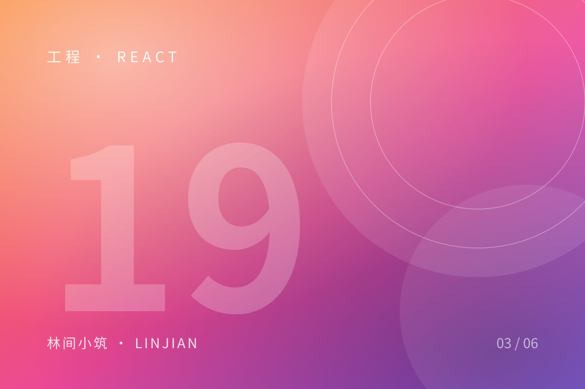

React 19 中那些值得关注的细节

React 19 发布之后，我花了两个周末把几个小项目迁了过去。比起「又多了哪些 API」，更值得记录的是它对日常写法的影响。
Actions 把异步状态收进了框架
以前提交表单要手写 pending、error、data 三个状态，现在可以交给 useActionState：
const [state, formAction, pending] = useActionState(submitForm, { error: null });
return (
<form action={formAction}>
<input name="email" disabled={pending} />
<button disabled={pending}>{pending ? '提交中…' : '订阅'}</button>
{state.error && <p>{state.error}</p>}
</form>
);代码变短了，但更重要的是：加载状态不再是每个组件各自定义的私有约定。
use() 让「读 Promise」变得自然
use(promise) 配合 Suspense，读远程数据不再需要 useEffect 里维护一堆标记位。它和 hooks 的规则不同，可以出现在条件语句里，这一点需要时间适应。
值得留意的三个变化
| 变化 | 影响 |
|---|---|
| ref 作为普通 prop | 不再需要 forwardRef |
| 文档元数据 | title / meta 可以直接写在组件里 |
| 更好的 hydration 报错 | 定位问题快了很多 |
我的结论
React 19 没有改变「组件即函数」的心智模型，它改变的是我们写副作用的方式：把越来越多的状态交给框架，把注意力留给真正的业务逻辑。